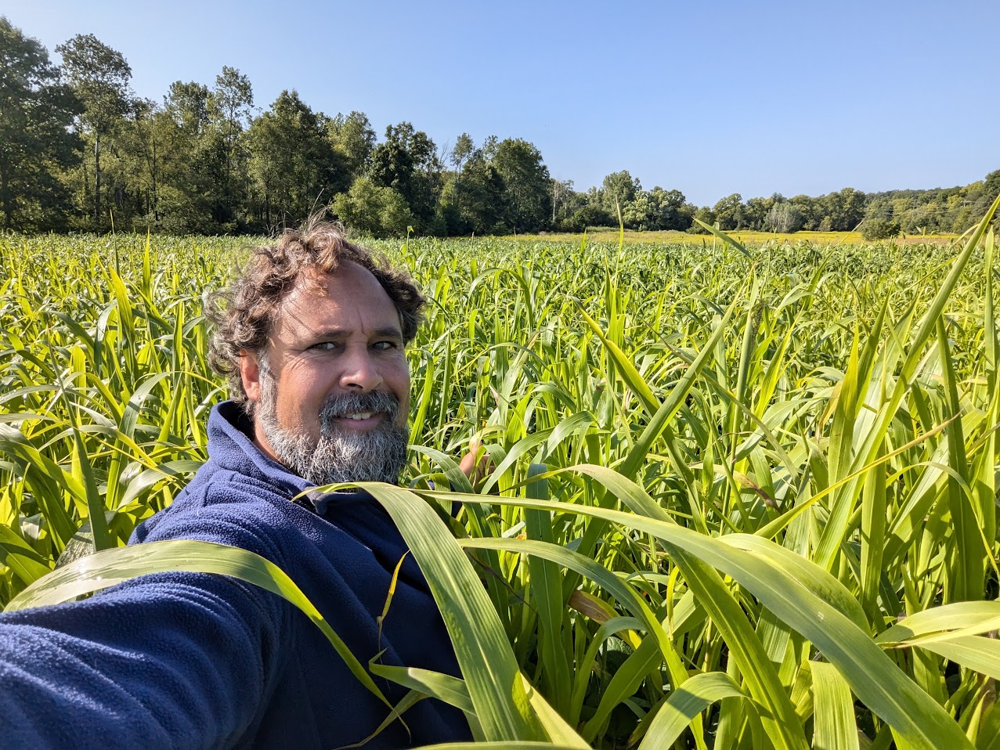
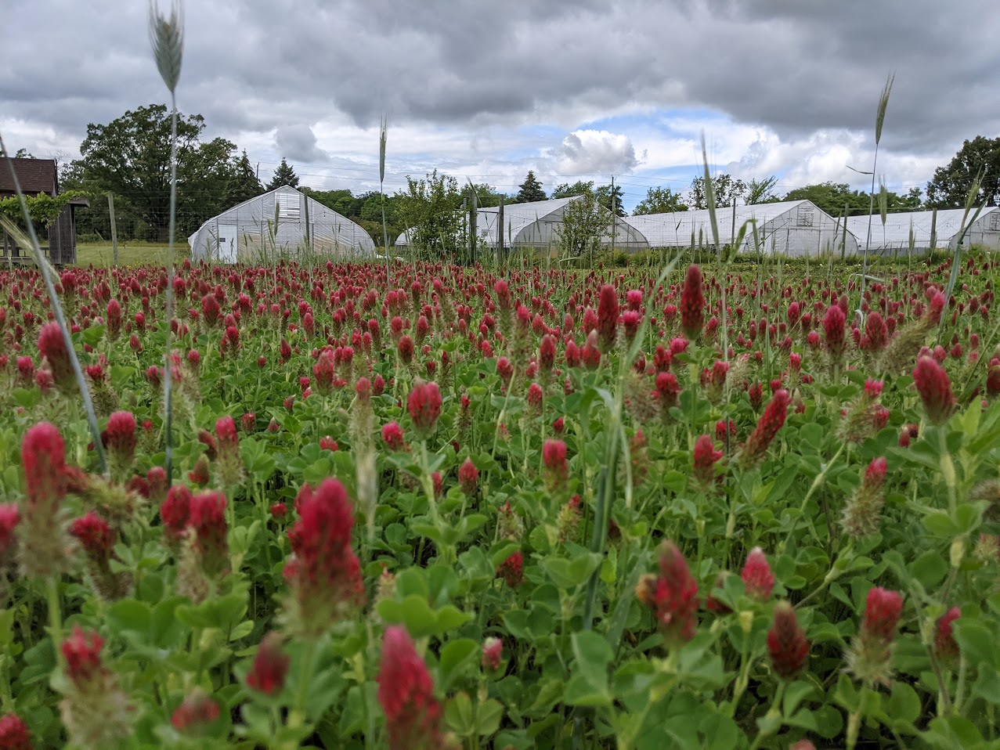
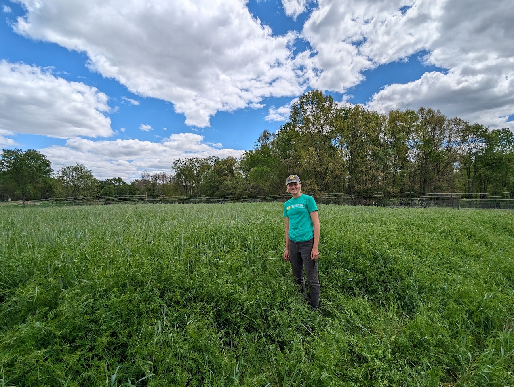
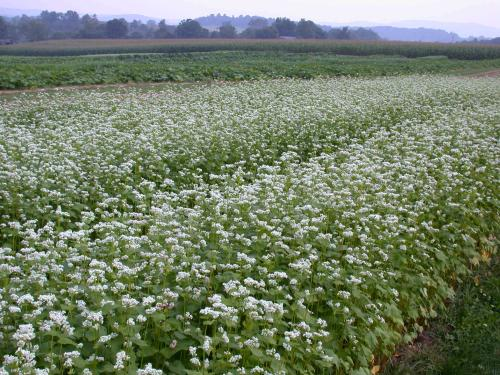
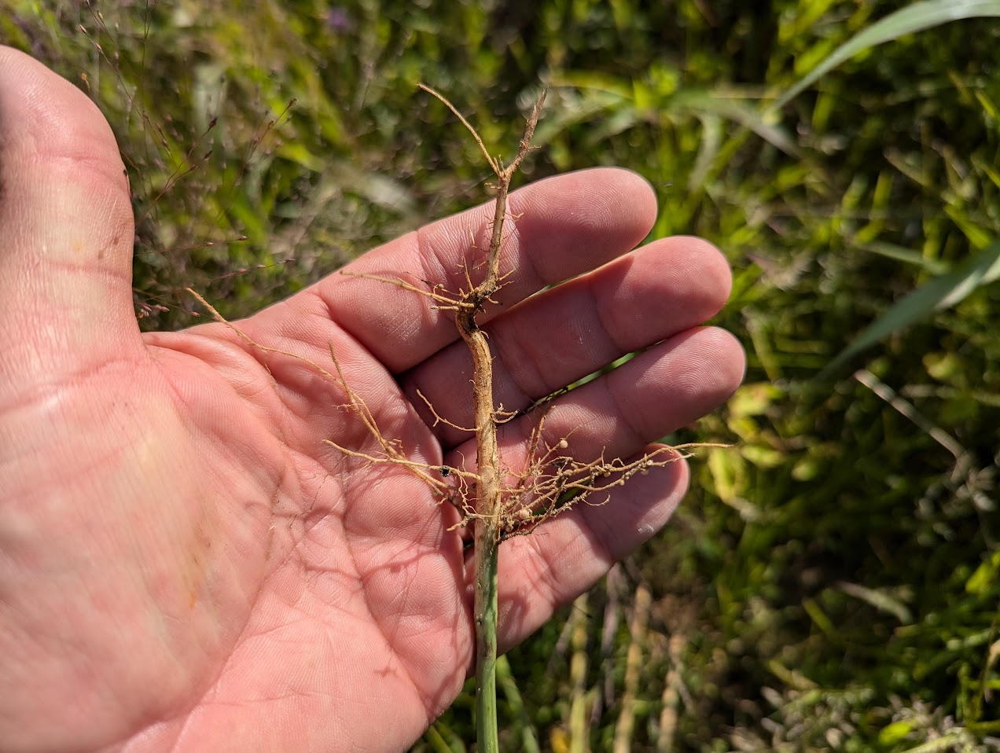

Overview
Crop rotation, cover cropping, and farmscaping use plant diversity to support soil health and ecosystem services. These practices can help manage pests and weeds, protect soil, and support beneficial organisms.

What Is Crop Rotation?
Crop rotation is the planned sequence of different crops grown in the same field or bed over time. Rotations often alternate crop families.
Why Is It Important?
- Changes food and host availability for crop-specific pests and pathogens
- Changes growing conditions and management practices, helping disrupt some weeds
- Creates opportunities to include soil-building cover crops
- Helps coordinate crop production with soil-health goals
Rotation effectiveness depends on the crops, pests, and pathogens involved, as well as the length of the rotation.
What Are Cover Crops?
Cover crops are grown primarily to cover and improve soil rather than to be harvested and sold.
Benefits of Cover Cropping
- Organic matter: Adds plant material that contributes to soil organic matter and humus.
- Biological activity: Supports soil microorganisms and other organisms.
- Nutrient cycling: Captures nutrients and can make them available to later crops as residues decompose.
- Nitrogen fixation: Legume cover crops can add biologically fixed nitrogen through partnerships with bacteria.
- Reduced nutrient loss: Takes up residual nutrients that might otherwise be lost during fall, winter, or spring.
- Soil structure: Roots can create pores and improve water infiltration. Some species can help penetrate compacted layers.
- Erosion prevention: Plant cover protects the soil surface, while roots help hold soil in place.
- Moisture conservation: Residues can act as mulch and reduce evaporation after termination.
- Biodiversity: Adds plant diversity and can provide habitat and food for beneficial insects.
Mustard and Biofumigation
Some mustard cover crops contain compounds that can suppress certain soilborne pests and pathogens when plant material is incorporated under suitable conditions. This practice is called biofumigation.
In potato production, biofumigation has been explored as part of disease-management strategies. Its effectiveness varies and should not be assumed to replace synthetic fumigation in every situation.
Challenges of Cover Cropping
- Cost and seed sourcing
- Seed costs and access to suitable varieties can limit adoption.
- Establishment
- Successful establishment depends on planting conditions, available moisture, and equipment.
- Rotation timing
- Cover crops must fit between cash crops without delaying planting or harvest.
- Termination
- Farmers need an effective way to kill or suppress the cover crop at the appropriate growth stage.
- Crop residues
- Remaining biomass can complicate planting or require additional management.
- Competing tasks
- Cover cropping must compete with other farm tasks for time, labor, and equipment.
How Could Adoption Increase?
- Education about benefits and practical management strategies
- Technical support for selecting species and fitting them into rotations
- Cost-share programs that help offset establishment costs
Choosing Cover Crops for the Available Season
Temperature preference, winter survival, and growth rate help determine which cover crops fit a planting window. These are separate characteristics: a cool-season crop does not necessarily survive the winter.
Cool-Season Cover Crops
Grow best in cooler conditions and may be planted in fall, winter, or spring, depending on local climate and species.
- Protect soil during cooler seasons
- Capture leftover nutrients
- Can fix nitrogen if they are legumes with suitable bacterial partners
Warm-Season Cover Crops
Grow best during warmer periods and can fill summer gaps between cash crops.
- Can rapidly produce biomass and shade weeds
- Often do not tolerate freezing temperatures
- Drought tolerance and root characteristics vary by species
Overwintering Cover Crops
Survive winter under the conditions where they are planted and resume growth in spring.
- Provide continuing soil protection
- Can suppress spring weeds
- Require a spring termination plan
Winter-Killed Cover Crops
Die naturally during winter when temperatures fall below their tolerance.
- Often planted in summer or fall before cold weather
- Leave residues that can protect the soil
- May simplify spring termination, depending on local conditions
Fast-Growing Cover Crops
Establish quickly and can fit into short gaps between cash crops.
- Rapidly cover soil
- Can suppress weeds
- Produce biomass within a limited planting window
Slow-Growing Cover Crops
Need a longer establishment or growth period to provide their intended benefits.
- Require more time in the rotation
- Some grow slowly in fall and rapidly the following spring
- Root depth and winter survival depend on species, not growth rate alone
Three Cover-Crop Examples
Crimson Clover
Characteristics and Benefits
- A nitrogen-fixing legume
- Can produce rapid fall growth
- Can suppress weeds as a green manure
Use in Rotation
Where winter survival is reliable, fall planting can provide spring growth and nitrogen before a full-season crop. It may also fit summer planting windows in cooler areas.

Hairy Vetch
Characteristics and Benefits
- A nitrogen-fixing legume
- Grows relatively slowly in fall
- Produces vigorous, vining growth in spring
- Can suppress spring weeds
Use in Rotation
Fall planting can provide spring biomass and nitrogen before a later-planted cash crop. The amount of nitrogen supplied depends on growth and management.
Plan termination so that spring growth does not interfere with the next crop.

Buckwheat
Characteristics and Benefits
- A fast-growing, short-season cover crop
- Suppresses weeds through rapid growth
- Flowers attract pollinators and beneficial insects
- Residues break down relatively quickly
- Can help cycle phosphorus; it does not add new phosphorus to the soil
Use in Rotation
Fits short, frost-free planting windows between cash crops. Buckwheat favors adequate moisture, is not frost tolerant, and can wilt under hot, dry conditions.
Manage termination before unwanted seed production.

How Do Cover Crops Fix Nitrogen?
Legumes such as hairy vetch and crimson clover can form symbiotic relationships with nitrogen-fixing bacteria, collectively called rhizobia.
- The bacteria live in nodules on the plant's roots.
- They convert atmospheric nitrogen into forms the plant can use.
- The plant supplies carbohydrates to the bacteria.
- As plant residues decompose, some of that nitrogen becomes available to subsequent crops.

Farmscaping for Ecosystem Services
Farmscaping is a whole-farm approach that uses plant diversity and habitat management to support beneficial organisms and ecological functions.
Potential Benefits
- Supports pollinators
- Provides habitat for natural enemies of crop pests
- Increases biodiversity
- Can complement pest management and reduce reliance on some chemical controls
Challenges to Consider
- Selecting plants suited to the desired beneficial organisms
- Allocating space, labor, and maintenance resources
- Avoiding plants that also support important crop pests or pathogens
- Evaluating whether habitat improvements produce the intended benefits